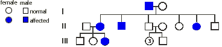

Human Genetics Problem Set
Problem 5 Tutorial: Interpreting a pedigree chart
| A human geneticist determined the pedigree shown in the diagram with filled symbols showing the affected individuals. How is this pattern of inheritance described? |

Dominant| In this pedigree, an affected father passes the trait to half of his 6 children, including 2 daughters and a son. One of the daughters passes the same trait to one of her 3 children. A trait that appears in successive generations is normally due to a dominant allele. If the allele were recessive, both the 1st generation mother, and the 2nd generation father, who are unaffected and unrelated, would have to be carriers for the trait to appear in their children. |
| Assuming that the trait is dominant, it cannot be X-linked. There is an unaffected daughter in the 2nd generation who inherited the X chromosome from her affected father. If the trait were X-linked and dominant, all daughters would be affected. |
| If the trait is autosomal and dominant, the pedigree is readily explained by predicting the 1st generation father affected with the trait is heterozygous and the mother is homozygous for the normal allele. Each of this couple's six children receives a normal allele from the mother, and either the dominant, trait-causing allele or a normal allele from the father. If the father were homozygous, all six children would have been affected. |
| The affected 2nd generation daughter has a 50% probability of passing the dominant allele to her children. |


University of Arizona
Revised: November 5, 1998
Contact the Development Team
http://biology.arizona.edu
All contents copyright © 1996-98. All rights reserved.